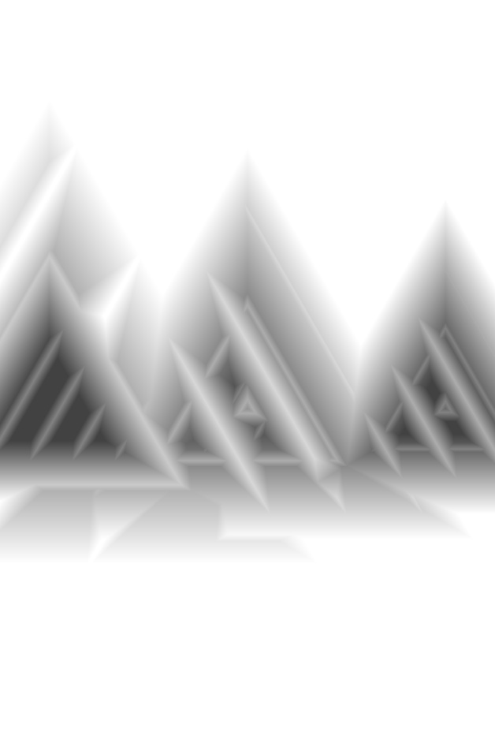
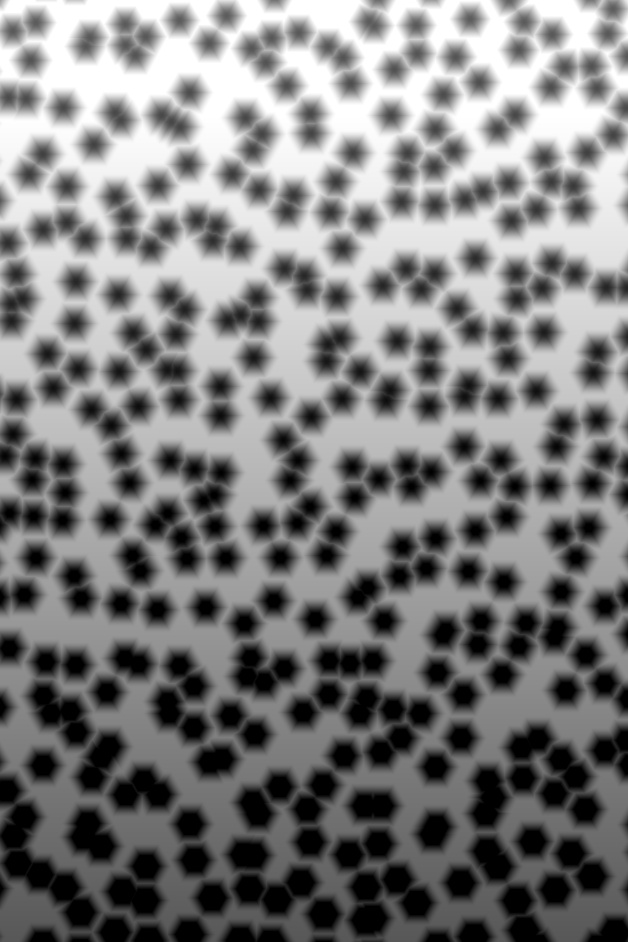
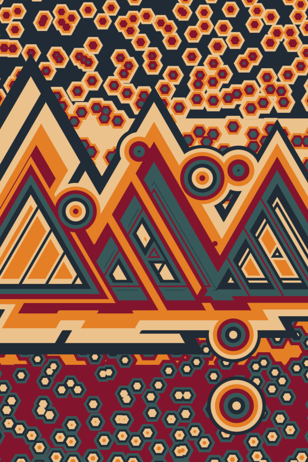
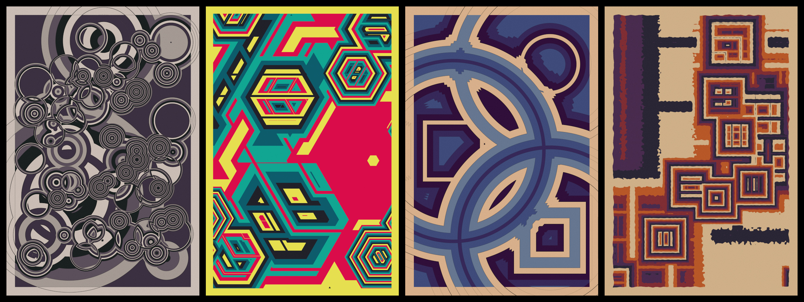

Jess Hewitt

I am an artist and developer. I'm co-founder of Generative Toys, and am currently working on generative art, and tools and workflows to create it.
Boundary Issues
Overview
Boundary Issues is a long-form project, released June of 2023 on Alba as part of the Flatlands group show.

Inspiration
The initial idea evolved from Divergent Convergence, which at times seemed like two separate projects to me: one leaning towards order, and the other towards chaos. For this series, I wanted to continue working with intersecting geometric shapes, this time exploring cleaner lines and minimalism, favoring order.
I added the outlines intentionally, but their extension into the image margin was accidental. It worked so well that I decided to keep it, and that is what inspired the series title. Once I had the title, everything about the project suddenly fell into place: the outlines themselves; the occasionally off-balance, awkward composition, sometimes feeling overcrowded and other times lonely; the shapes extending into the margin, not respecting the bounds of the image.
The animation in this series serves to playfully highlight and enhance the underlying structure of the larger shapes, and also to give a sense of depth to this otherwise very flat construction.
Process
Boundary Issues is made with GLSL/WebGL and vanilla JS. Creation consists of generating 3 layers of shapes differing in scale and distribution, colorizing and combining those layers, and finally applying post-processing effects.
Generate large shapes
Two or three large shapes are generated and placed precisely. The shape generation is repeated at different scales, and the results are combined in various ways.
Generate medium shapes
Medium-sized shapes are generated and placed in a random radial distribution.
Generate small shapes
Cell noise is generated, modified, and used to place the small shapes. There's a high chance they will be the same shape as the other layers.
Colorize and combine
The large and medium shape layers are combined and colorized. The small shape layer is separately colorized, and the two are combined with alpha blending.
Post-processing
The blended and colorized shape layers are outlined. A frame is added, and the whole pieces is textured with multi-resolution cell noise.
Traits
- Palette - One of 30 unique palettes
- Dark Mode - Swaps lightest and darkest colors
- Large Shape - Circle, Triangle, Square, or Hexagon
- Medium Shape - Circle, Triangle, Square, or Hexagon
- Small Shape - Circle, Triangle, Square, or Hexagon
- Placement - One of 14 offset patterns for the large shapes
Summary
This series needed a lot of iteration before it began to 'feel' right. It's a rather backwards way of working, feeling your way to the vision. I tend to begin a project with abstract ideas or concepts I begin to explore, or I use a tool like Noisedeck to randomize basic building blocks and ways of combining them. I rely heavily on my intuition to know when I'm onto something good and to guide a project towards completion.
The intuitive challenge of this project was finding and staying true to its unique voice. What was I really trying to say? How did the elements of design support it? Had it veered off into excessive minimalism or noise? There were many branches that were not-quite-right and were ultimately discarded (some pictured below). The whole creative process took almost a year. But it was all worth it, and I'm proud of the result.
{kind=link}
^ top ^